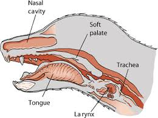

Do Dogs Have Adam’s Apples?
If you own a dog, you are most likely asking yourself whether your fuzzy buddy has an Adam's apples. As a dog lover, I can ensure you that all dogs do have it. Specialists typically describe Adam's Apples in pets as the Larynx.
If you've ever before listened to someone claiming that dogs don't have Adam's apples yet describe a swelling that is located in the front of the neck as the Larynx, you must not stress. That's the Adam's apple!
However it is necessary to keep in mind that little swellings can be located in various places in your furry friend's body. This means that not all lumps you feel in your dog's body might not be an adam's apple and might just be some type of tumor.
How do you find your dog's adam's apples
Is chicken sausage healthier than pork sausage?
Nobody answers this question better than Mathew Gordon on Quora.
Chicken sausage is usually healthier than pork sausage but, as always, check the nutrition information on any prepackaged product. Stats I tend to look for on the nutrition information of prepackaged sausages include: calories per gram, fat per gram (saturated and unsaturated), protein per gram, and anything else that stands out (e.g.: whether the sausage has an unusually high sodium content). If you want to get really serious about your sausage healthiness comparisons, you can make an Excel spreadsheet of your favourite brands, but I don’t recommend spending your weekend that way. As with many foods, it’s all about ingredients and preparation. If you have the option of buying either from a butcher or meat counter such that it is not pre-packaged, the chicken sausage will usually be healthier.
Conclusion
Is sausage safe for dogs? No, not in large amounts. Tasting it will not cause harm, but eating it will. Feeding your dog sausage is a bad idea. Many other alternatives will keep your furry friend happy.